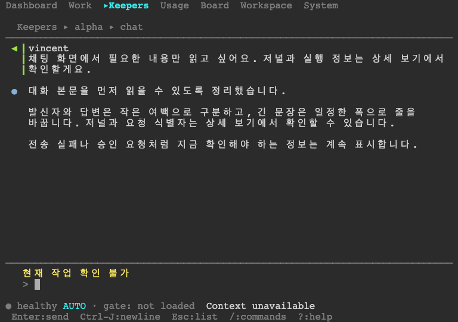

대화가 먼저 읽히는 TUI
실제로 빌드한 TUI를 테스트용 서버와 터미널에서 실행한 화면입니다. 대화의 넓은 왼쪽 칸과 반복 표시는 줄이고, 상세 정보는 기존 단축키로 열 수 있게 했습니다.

채팅 · 80 × 30칸
Keepers 목록 캡처는 로그의 CI 표시와 로컬 실행 메타데이터가 충돌하여 실행 출처가 미검증입니다.
소스 22b0cf94cb · macOS ARM64 · 테스트용 대화와 상태입니다.
원본 ANSI 출력과 행·열·텍스트가 일치하는 xterm 재생 캡처입니다. 글꼴은 재생 터미널 설정이며, 현재 설치된 TUI의 화면은 아닙니다. 노란 경고는 테스트 서버에서 현재 작업을 조회할 수 없다는 실제 표시입니다.
검증 범위와 남은 항목 · 캡처와 실행 파일 식별값